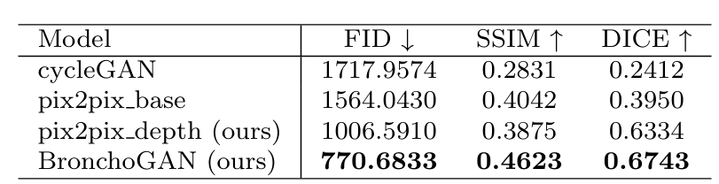

Quantitative Results

Table 1: Quantitative results obtained for 2271 VB test images of the Harvard image dataset. Dice coefficients were estimated based on input and synthesized image bronchial orifice segmentations obtained with our training free pipeline.